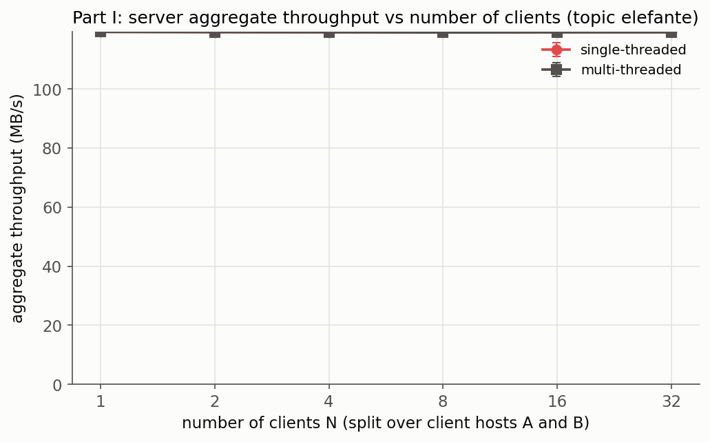
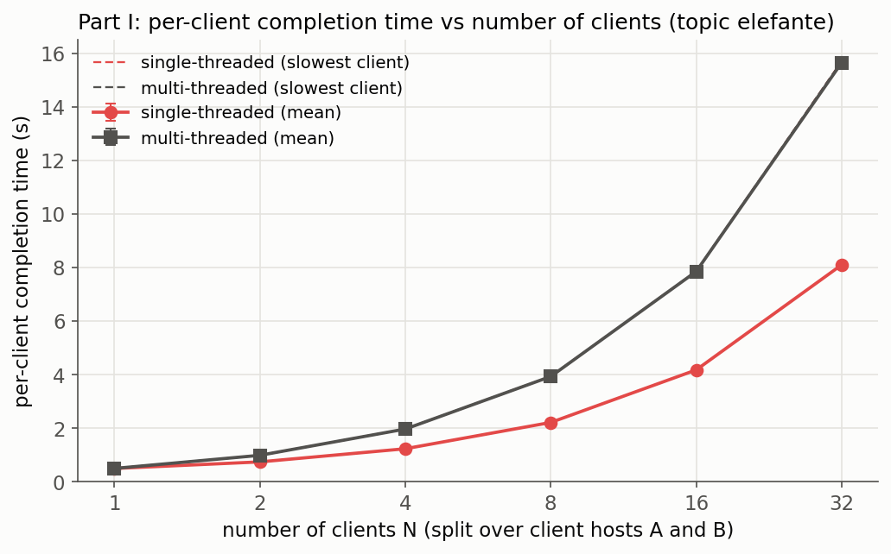
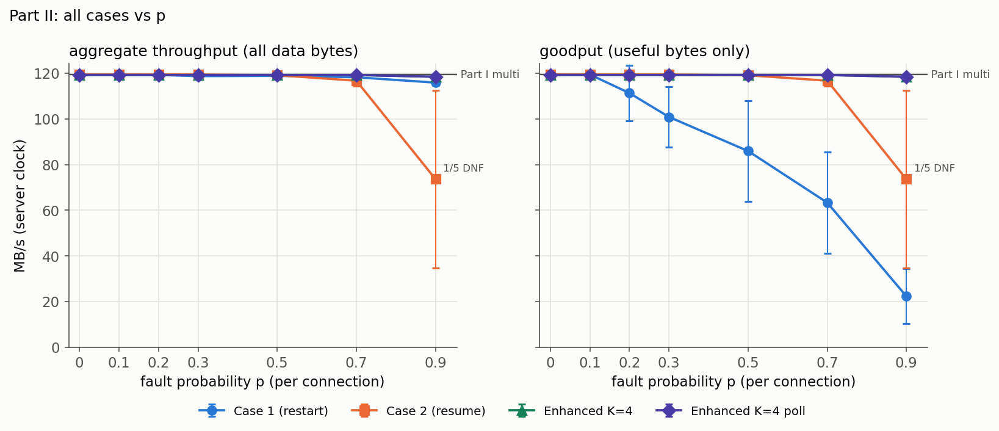
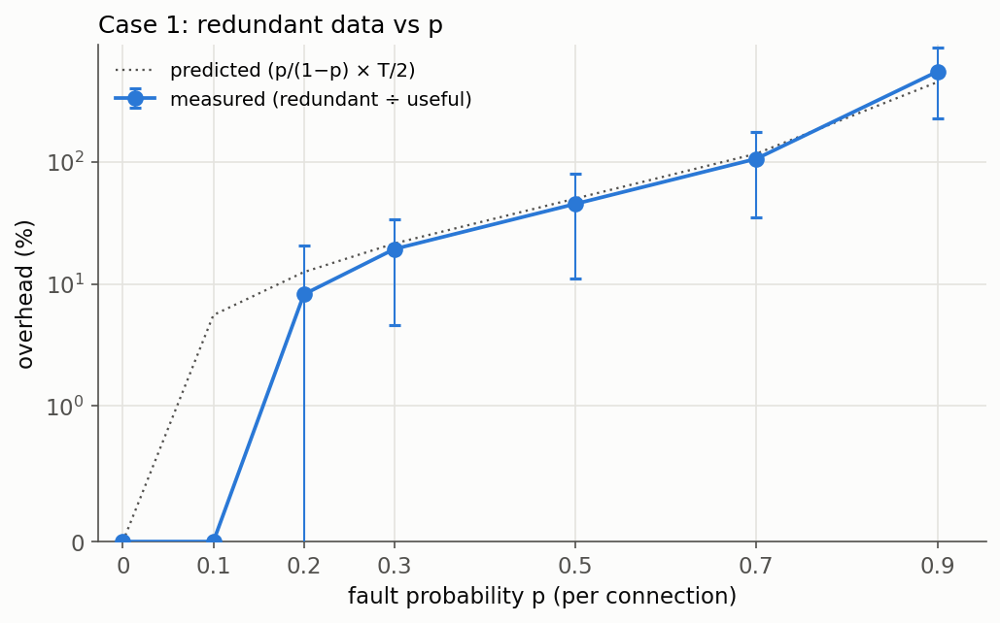
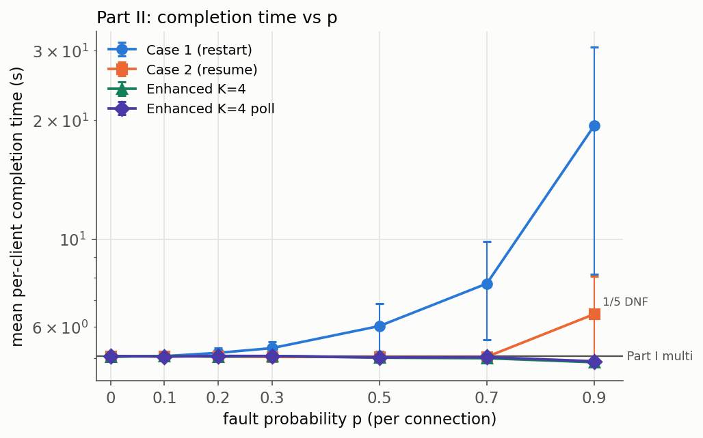
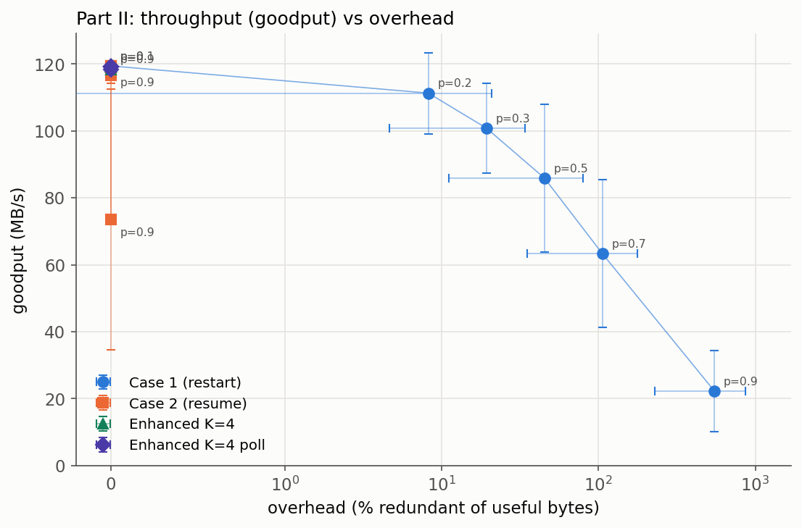
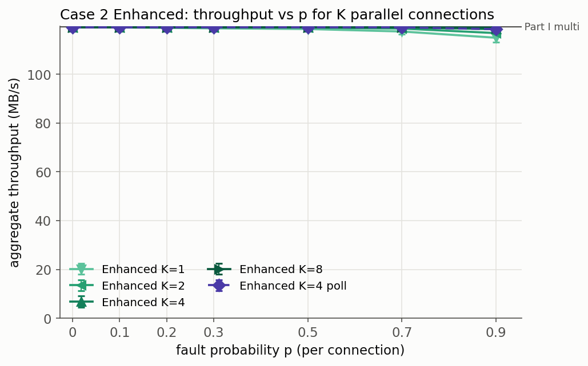
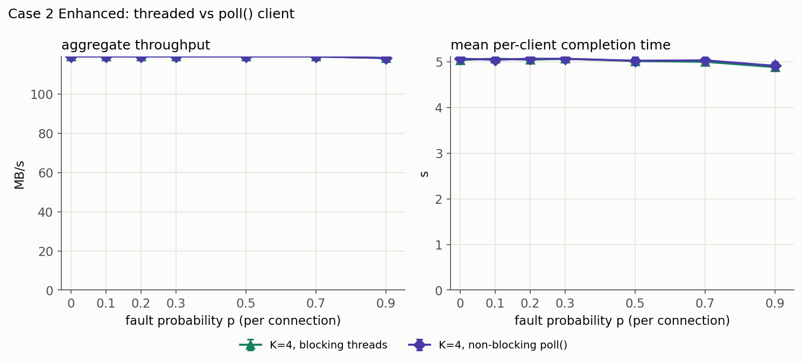
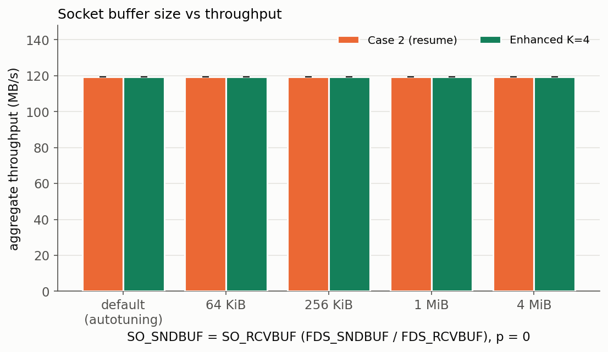

IT305 Computer Networks Lab: Socket Programming Project
Final Report, Lab Group 006 + 043
| # | Name | Roll number |
|---|---|---|
| 1 | Madhav Chauhan | 202401106 |
| 2 | Dhruva Bhatiya | 202401029 |
| 3 | Tasvi Bhalani | 202401027 |
| 4 | Tanvi Kakadiya | 202401078 |
| 5 | Bhagy Parmar | 202401137 |
| 6 | Kanika Pal | 202401082 |
A server maps each topic (one sub-folder of topics_root_dir, here the ten
animal folders of the Animals-10 dataset) to the files in it. A client names a topic and receives
every file of that topic into output_dir/<topic>/. The project is written in C
(gnu11) with POSIX threads and TCP/IPv4 sockets on Linux and is delivered as four self-contained
versions:
| Folder | Version | Behaviour after a cut connection |
|---|---|---|
Part1/ | Plain service, single or multi (default) server | no faults injected |
Part2_Case1/ | Fault injection, no session management | the client reconnects and the whole topic is sent again |
Part2_Case2/ | Fault injection + session management | the client resumes from a checkpoint (file index, byte offset) |
Part2_Case2_Enhanced/ | Case 2 + K parallel TCP connections, blocking or non-blocking client | the failed file is re-queued at its offset and fetched by any connection |
Every folder builds exactly two executables, server and client, with
make and no warnings. Nothing is hard-coded: port, path and address come only from
the command line.
Part I server: ./server <port> <topics_root_dir> [single|multi] Part II server: ./server <port> <topics_root_dir> <failure_probability> [seed] Client (all cases): ./client <server_ip> <server_port> <topic> <output_dir> Case 1 extra: [max_retries=100] Case 2 extra: [max_retries=20] Enhanced extra: [connections=4] [max_retries=20] [threads|poll] Exit codes: 0 success, 1 fatal/usage error, 2 gave up after max_retries
On success the topic folder holds exactly the topic's files; partial files
(.part) and the session record (.session) exist only while a transfer is
unfinished.
At start-up the server reads topics_root_dir with opendir()/readdir().
Every sub-folder becomes a topic_t whose key is the folder name and whose value is the
folder's realpath(). Each folder is scanned once; its regular files are stored with
their sizes and sorted by name, so a file index always denotes the same file (the Case 2
checkpoints rely on this). Requests are then answered without touching the directory again.
typedef struct { char name[NAME_MAX+1]; uint64_t size; } file_entry_t;
typedef struct {
char key[64]; /* topic key = folder name, e.g. "gatto" */
char abs_path[PATH_MAX]; /* realpath() of the folder (the map value) */
file_entry_t *files; /* sorted by name */
uint32_t n_files; uint64_t total_bytes;
} topic_t;
/* topic_map_t: sorted array of topic_t* + pthread_rwlock_t (re-scan only) */
bsearch() on the sorted key array (exact match first, then a
case-insensitive match, so Cane finds cane). An unknown topic gets
ERROR 404.topic_t is allocated once and never moved or freed; a re-scan for newly created topic
folders (at most once per second, triggered by an unknown topic) only adds topics and swaps a new
pointer array in under a short write lock.For the Animals-10 dataset the map holds 10 topics with 26 179 files and 614 MB in total
(e.g. cane 4 863 files / 60.7 MB, elefante 1 446 files / 58.5 MB,
gatto 1 668 files / 151.1 MB).
TCP is a byte stream, so every message is framed by a fixed 16-byte header followed by
payload_len payload bytes. All integers are packed field by field in network byte
order; structures are never sent raw. All socket I/O goes through sendall()/recvall()
loops that handle short transfers and EINTR and use MSG_NOSIGNAL.
0 2 3 4 8 16 | magic | ver | type | reserved (0) | payload_len (u64) | | 0x5446 | 1 | | | bytes that follow the header |
| Code | Message | Direction | Payload (in order) | Used in |
|---|---|---|---|---|
| 0x01 | GET | C→S | ASCII "GET <topic>" | Part I, Case 1, Case 2 |
| 0x02 | RESUME | C→S | session_id[16], file_index u32, offset u64, topic_len u8, topic, name_len u16, name | Case 2 |
| 0x03 | MANIFEST_REQ | C→S | topic_len u8, topic, connections u8 | Enhanced |
| 0x04 | FETCH | C→S | same fields as RESUME | Enhanced |
| 0x10 | TOPIC_BEGIN | S→C | session_id[16], file_count u32, total_bytes u64 | Part I, Case 1, Case 2 |
| 0x11 | FILE_HDR | S→C | file_index u32, file_size u64, start_offset u64, name_len u16, name; then exactly file_size−start_offset raw bytes | all |
| 0x12 | FILE_END | S→C | file_index u32 | all |
| 0x13 | TOPIC_END | S→C | file_count u32, total_bytes u64 | Part I, Case 1, Case 2 |
| 0x14 | RESUME_OK | S→C | file_index u32, offset u64 | Case 2 |
| 0x15 | RESUME_REJECT | S→C | reason u16 (1–5) | Case 2, Enhanced |
| 0x16 | MANIFEST | S→C | session_id[16], file_count u32, total_bytes u64, per file: size u64, name_len u16, name | Enhanced |
| 0x7F | ERROR | S→C | code u16 (400, 404, 500, 503), msg_len u16, msg | all |
Part I exchange. The client sends GET <topic>. The server replies
TOPIC_BEGIN, then for every file FILE_HDR + raw bytes +
FILE_END, and finally TOPIC_END with the totals, which the client checks
before exiting 0. File data is sent with zero-copy sendfile() in 64 KB chunks; headers
are sent with MSG_MORE so the kernel coalesces them with the following data. The
client rejects any file name containing /, .., a leading dot or control
characters. Part I and Case 1 write each file directly under its final name, opened with
O_TRUNC, so a restarted Case 1 attempt overwrites the earlier partial data.
Robustness. A request must arrive completely within an absolute 30 s deadline, only the
four request types are accepted and their payload is limited to 512 bytes before anything is
allocated; a malformed request gets ERROR 400. Server sockets use 30 s send/receive
time-outs.
Both modes share one accept loop (server_core.c); only the scheduling differs:
serve_client() directly. Clients are served
strictly one after another; the others wait in the kernel's listen backlog
(SOMAXCONN).serve_client(), so clients are served concurrently. At most 256 worker threads run at
once; a connection beyond that gets ERROR 503 and the client retries with back-off.
Shared state (thread counter, statistics, topic map) is protected by mutexes / the rwlock.sigwait(), stops accepting, gives active transfers up to 5 s, prints a summary and
exits 0. SIGPIPE is ignored.Timing and byte counting (for the measurements). Every connection records its start and
end with clock_gettime(CLOCK_MONOTONIC) and counts the data bytes actually returned by
sendfile(). A connection's end is taken after the server has half-closed and seen the
client's close, so the interval includes the data still queued in the socket buffer.
All Part II cases use the multi-threaded server of Part I (one thread per client connection) with fault injection added.
<failure_probability> p is the probability that a
connection is interrupted during its file transfer. Each connection is cut with
probability p, independently of the others and of the topic size.GET, the rest of the topic from the checkpoint for a Case 2 GET/RESUME,
the rest of the requested file for the first FETCH of an Enhanced connection. Control
messages never get a decision, so every fault interrupts file data.drand48_r generator (thread-safe, no global
state) seeded with a hash of (seed, conn_id); the optional [seed] argument
makes runs repeatable. One draw r ∈ [0,1) decides: cut iff r < p. If so, a second draw picks
the cut byte uniformly among the request's data bytes.FAULT event (connection,
file, offset), then calls shutdown() and close(). The client therefore
sees the connection die at an arbitrary byte, not only at file or chunk boundaries. Only that
connection ends; the server keeps serving all others.Case 1 uses the Part I messages. Neither side keeps transfer state. When the connection is lost
before TOPIC_END (recv() returns 0, ECONNRESET or the 15 s
receive time-out), the client waits (50 ms after an attempt that received data;
50 ms doubling up to 1 s after attempts that received nothing), reconnects and sends
GET again. The whole topic is re-sent and every file is rewritten from byte 0. After
max_retries attempts (default 100) the client exits with status 2.
A checkpoint is the tuple (session id, topic, file index, file name, byte offset). The client is authoritative for the offset, because only it knows which bytes are on its disk; the server keeps a session record and validates every checkpoint before resuming.
| Phase | Client → Server | Server → Client |
|---|---|---|
| 1. Start | GET <topic> | TOPIC_BEGIN(random 16-byte session id from getrandom(), counts), then files |
| 2. Completion | — | TOPIC_END; session marked DONE |
| 3. Failure | connection lost | fault injected: shutdown + close; session INTERRUPTED |
| 4. Resumption | RESUME(session id, file index, offset, topic, name) | RESUME_OK(index, offset), FILE_HDR with start_offset = offset, the remaining bytes and files, TOPIC_END |
| 5. Invalid checkpoint | RESUME | RESUME_REJECT(reason); the client discards partial data and restarts with GET |
Stored by the client. The file in progress is written to
<name>.part; its size is the byte offset, so the checkpoint is updated by
every write() at no extra cost and always matches the data on disk. On
FILE_END the file is renamed to its final name. A small text record
.session (session id, topic, file index, file name) is written atomically (temporary
file + rename()) at TOPIC_BEGIN and at every FILE_HDR, and
deleted after TOPIC_END. Because the checkpoint lives on disk, even a restarted client
process resumes.
Stored by the server. A table of 256 session slots protected by one mutex: session id, topic, index of the file being sent, bytes of that file already sent, total bytes sent, reconnect count, state (ACTIVE / INTERRUPTED / DONE) and last-seen time (monotonic). The record is updated after every chunk sent. Idle slots expire after 300 s and are reused.
Validation of a RESUME (a failed check gives RESUME_REJECT with that number):
(1) the topic exists; (2) file_index < number of files; (3) the name equals the file at that
index (detects a changed directory); (4) offset ≤ file size; (5) for a known session, the
checkpoint is not ahead of what the server has sent. If all checks pass, the server sends only bytes
[offset, size) of that file with sendfile() from that offset, then the remaining files.
No byte that was already stored is sent again, which the measurements confirm (0 redundant bytes).
Parallel TCP connections. The client first opens one short connection,
sends MANIFEST_REQ(topic, K) and receives the MANIFEST (session id and the
size and name of every file). It then opens K worker connections (default 4, range 1–16).
FETCH(session id, index, offset,
topic, name); the reply is FILE_HDR + data + FILE_END. Faster connections
take more files, which balances the load automatically..part file, renamed on FILE_END. Files are independent, so no byte-stream
reassembly across connections is needed..part size) and reconnects; any worker may continue that file
with FETCH from that offset. The other K−1 connections are unaffected. The server
keeps, per session, the bytes sent of every file and validates each FETCH like a
RESUME..session and exits 0.Socket mode. Two client engines are implemented and measured:
threads (default: one thread per connection with blocking sockets) and
poll (a single thread drives all K sockets with O_NONBLOCK and
poll(), treating EAGAIN as "retry when ready").
Other enhancements (all versions): zero-copy sendfile(); cached, pre-sorted
file lists (no directory scan per request); MSG_MORE header coalescing;
TCP_NODELAY on data sockets so the per-file FETCH round trip is not delayed
by Nagle + delayed ACK; 64 KB I/O chunks; optional socket buffer sizes via
FDS_SNDBUF/FDS_RCVBUF (measured in §7).
The experiments use three hosts: the server S and two client hosts A and
B. Each host has its own Linux network stack (network namespace) and is connected to a
software switch (Linux bridge) by a 1 Gbit/s link (tbf) with 0.1 ms one-way delay
(netem) and the fq_codel queue discipline. The hosts are emulated on one
machine (Intel Core i5-13450HX, 16 logical CPUs, Fedora Linux, kernel 7.2.11, gcc 16.2.1). The
measured link capacity is 957 Mbit/s for one TCP flow and 2 × 478 Mbit/s when two flows share
S's uplink, so S's 1 Gbit/s uplink is the shared bottleneck for all clients. Topics are read from
S's local disk; every client writes to its own directory on local disk. The full Animals-10
dataset (10 topics, 26 179 files, 614 MB) is served.
FDS_LOG, FDS_EVENTS). All raw CSV
files are in Results/raw/; the summary tables and graphs are computed from them by
tools/exp/analyze.py and tools/exp/plot.py.| Metric | Definition |
|---|---|
| Aggregate throughput | Σ data bytes sent by the server ÷ (last connection end − first connection start), measured on the server's clock with clock_gettime(CLOCK_MONOTONIC). MB = 106 bytes. |
| Total bytes transmitted | Σ file data bytes sent by the server over all connections of a run, including retransmissions. |
| Useful bytes | Bytes of the topic stored by the clients (topic size × number of clients). |
| Redundant bytes | Total bytes transmitted − useful bytes. |
| Overhead | Redundant bytes ÷ useful bytes × 100 %. Wire overhead additionally counts message headers and control messages. |
| Completion time | Per client, from its first connection until the topic is complete, including back-off and reconnections. |
| Goodput | Useful bytes ÷ the same interval as the aggregate throughput. |
| Faults, reconnects | FAULT events in the server log; reconnections reported by the clients. |
All clients request the topic elefante (1 446 files, T = 58.5 MB). N clients in
total, split evenly over A and B (N = 1: one client on A).
| N | Single-threaded server | Multi-threaded server | ||||
|---|---|---|---|---|---|---|
| Aggregate throughput (MB/s) | Mean completion (s) | Max completion (s) | Aggregate throughput (MB/s) | Mean completion (s) | Max completion (s) | |
| 1 | 119.3 ± 0.0 | 0.491 | 0.491 | 119.3 ± 0.0 | 0.491 | 0.491 |
| 2 | 119.2 ± 0.1 | 0.736 | 0.981 | 119.3 ± 0.0 | 0.981 | 0.981 |
| 4 | 119.2 ± 0.0 | 1.23 | 1.96 | 119.2 ± 0.1 | 1.96 | 1.96 |
| 8 | 119.2 ± 0.1 | 2.21 | 3.93 | 119.1 ± 0.2 | 3.93 | 3.93 |
| 16 | 119.2 ± 0.0 | 4.17 | 7.85 | 119.2 ± 0.1 | 7.85 | 7.85 |
| 32 | 119.2 ± 0.0 | 8.10 | 15.70 | 119.2 ± 0.1 | 15.65 | 15.70 |
Table 1: Part I, mean ± sd over 5 repetitions (completion-time sd ≤ 0.09 s).

Figure 1: Aggregate file transfer rate vs number of clients (Results/Part1_SingleVsMulti_throughput.png).

Figure 2: Per-client completion time vs number of clients (Results/Part1_SingleVsMulti_completion.png).
sendfile() and
its CPU is never the bottleneck. Adding threads cannot raise the rate of a link that is already
full, so the throughput curve is flat.Workload: topic gatto (1 668 files, T = 151.14 MB), 4 clients per run (2 on A,
2 on B), so 604.6 MB of useful data per run; p ∈ {0, 0.1, 0.2, 0.3, 0.5, 0.7, 0.9}; 5
repetitions per value. Case 1 clients allow 100 attempts, Case 2 clients 20 consecutive attempts
without progress.
| p | Case 1 (no session management) | Case 2 (session management) | ||||||||||
|---|---|---|---|---|---|---|---|---|---|---|---|---|
| Total (MB) | Redundant (MB) | Overhead (%) | Completion (s) | Goodput (MB/s) | Faults | Total (MB) | Redundant (MB) | Overhead (%) | Completion (s) | Goodput (MB/s) | Faults | |
| 0 | 604.6 | 0 | 0 | 5.06 | 119.5 | 0 | 604.6 | 0 | 0 | 5.06 | 119.5 | 0 |
| 0.1 | 604.6 | 0 | 0 | 5.06 | 119.5 | 0 | 604.6 | 0 | 0 | 5.06 | 119.5 | 0 |
| 0.2 | 654.2 | 49.7 | 8.2 | 5.16 | 111.3 | 0.8 | 604.6 | 0 | 0 | 5.05 | 119.5 | 0.8 |
| 0.3 | 721.3 | 116.7 | 19.3 | 5.30 | 100.8 | 1.8 | 604.6 | 0 | 0 | 5.04 | 119.4 | 1.8 |
| 0.5 | 877.9 | 273.3 | 45.2 | 6.03 | 85.9 | 3.6 | 604.6 | 0 | 0 | 5.03 | 119.1 | 3.6 |
| 0.7 | 1 245 | 640.6 | 106.0 | 7.72 | 63.3 | 8.6 | 604.6 | 0 | 0 | 5.04 | 116.7 | 8.6 |
| 0.9 | 3 922 | 3 317 | 548.7 | 19.39 | 22.3 | 43.8 | 604.6 | 0 | 0 | 6.46 | 73.6 | 36.0 |
Table 2: Part II, mean over 5 repetitions (per run of 4 clients). Case 2 at p = 0.9: 4 of 5 runs completed, 1 run had one client give up (DNF), excluded from the means. Standard deviations are in Results/Part2_summary.csv.

Figure 3: Aggregate throughput (all data bytes) and goodput (useful bytes) vs p, all cases, with the Part I reference (Results/Part2_Comparison_throughput.png).

Figure 4: Case 1 redundant bytes vs p, measured and predicted (Results/Part2_Case1_overhead.png).

Figure 5: Mean per-client completion time vs p (Results/Part2_Comparison_completion.png).

Figure 6: Throughput (goodput) vs overhead (Results/Part2_ThroughputVsOverhead.png).
Further graphs in Results/: Part2_Case1_throughput,
Part2_Case2_throughput, Part2_Case2_overhead,
Part2_Comparison_overhead.
With p = 0 every Part II version reaches the Part I multi-threaded result with the same topic and 4 clients (119.5 MB/s, 5.06 s): Case 1 and Case 2 119.5 MB/s, Enhanced 119.2–119.3 MB/s, i.e. 100 % of Part I. Fault injection and session bookkeeping therefore cost nothing measurable when no fault occurs. The protocol overhead on the wire (headers and control messages) is 0.091 % of the data for Part I, Case 1 and Case 2.
At p = 0.9 Case 2's mean goodput drops to 73.6 ± 39 MB/s and one client of one run gave up.
The per-client logs show why. Most clients still finished in 4.9–5.8 s, but clients that needed
25–47 attempts took 13–22 s. Each cut happens at a uniformly random byte of the
connection's remaining data, so after a few cuts the remaining part of the topic becomes small,
and a cut of a small remainder delivers few or no new bytes. Attempts without new data double the
back-off up to 1 s. The client that gave up had received all but the very last byte
(151 144 281 of 151 144 282 bytes): with one byte left, every cut falls on byte 0, and 20 such
attempts in a row (probability 0.920 ≈ 12 %) exhaust max_retries.
This is a consequence of the extreme fault rate combined with the retry limit, not data loss: the
received data was correct. Case 2 Enhanced does not show the effect (§7).
Enhancements used: K parallel TCP connections with a dynamic file-level work queue
(K = 1, 2, 4, 8; threads engine), the non-blocking socket engine (poll, K = 4),
zero-copy sendfile(), TCP_NODELAY and MSG_MORE, and a
socket-buffer-size experiment. Same workload as §6.
| Implementation | p = 0 | p = 0.7 | p = 0.9 | ||||
|---|---|---|---|---|---|---|---|
| Goodput (MB/s) | Completion (s) | Goodput (MB/s) | Completion (s) | Goodput (MB/s) | Completion (s) | DNF runs | |
| Case 1 | 119.5 | 5.06 | 63.3 | 7.72 | 22.3 | 19.39 | 0/5 |
| Case 2 | 119.5 | 5.06 | 116.7 | 5.04 | 73.6 | 6.46 | 1/5 |
| Enhanced K = 1, threads | 119.2 | 5.04 | 117.5 | 4.74 | 115.0 | 4.42 | 0/5 |
| Enhanced K = 2, threads | 119.2 | 5.07 | 118.7 | 4.96 | 116.9 | 4.68 | 0/5 |
| Enhanced K = 4, threads | 119.2 | 5.04 | 119.2 | 5.00 | 118.5 | 4.88 | 0/5 |
| Enhanced K = 8, threads | 119.3 | 5.05 | 119.3 | 5.04 | 119.1 | 4.98 | 0/5 |
| Enhanced K = 4, poll | 119.2 | 5.07 | 119.2 | 5.03 | 118.5 | 4.91 | 0/5 |
Table 3: Enhanced vs Case 1 and Case 2 (means over 5 repetitions; Enhanced has 0 redundant bytes at every p).

Figure 7: Enhanced throughput vs p for K parallel connections (Results/Part2_Case2_Enhanced_throughput.png).

Figure 8: Blocking threads vs non-blocking poll() client engine, K = 4 (Results/Part2_Enhanced_ThreadsVsPoll.png).

Figure 9: Throughput vs socket buffer size at p = 0 (Results/Buffers_throughput.png).
The implementation follows the submitted design document except at the following reviewed points.
| # | Design said | Implementation does, and why |
|---|---|---|
| 1 | Client receive time-out 15 s | Part I client has none (Part II clients keep 15 s): with the single-threaded server, queued clients legitimately wait for all earlier clients. |
| 2 | Control payload ≤ 64 KB | Cap per message type; the MANIFEST may be up to 64 MiB (the MANIFEST of cane is about 250 KB). |
| 3 | Topic array rebuilt on re-scan | Topics are allocated once and never moved; a re-scan only adds topics and swaps a pointer array, so workers never see a moved topic. |
| 4 | — | Output goes to output_dir/<topic exactly as typed>/; only the topic files remain on success. |
| 5 | -Werror in the Makefile | make uses -Wall -Wextra; make strict adds -Werror (a new warning of another compiler version must not prevent the build). |
| 6 | Byte-range split of files > 8 MB | Not implemented: one FETCH transfers one whole file; Animals-10 files are tens of KB. |
| 7 | Text errors | The "≈ 1 700 chunks" example is gatto, not cane; every name uses 006_043. |
| 8 | Logs written to a file | CSV logs only when FDS_LOG/FDS_EVENTS are set (no hard-coded paths). |
| 9 | A faulted chunk is not sent at all | The cut lands at a random byte inside the chunk, so faults happen "at any point in time" and byte-offset resume is exercised. |
| 10 | — | TCP_NODELAY on data sockets (avoids Nagle + delayed-ACK stalls of the per-file FETCH). |
| 11 | Enhanced FETCH validated like RESUME | The server keeps bytes sent per file (sent_off[i]), because with K connections one (file, offset) pair cannot describe progress. |
| 12 | 256 slots expired after 300 s | Explicit slot reuse order (free, oldest DONE, idle > 300 s, oldest INTERRUPTED); a fresh ACTIVE session is never evicted. |
| 13 | Enhanced recovery re-queues (file, offset) | Also after a client restart (queue rebuilt from MANIFEST + files on disk); back-off resets after progress; FETCH is never pipelined. |
| 14 | Accept loop in each server.c | Shared server_core.c for all four versions. |
| 15 | p ∈ {0 … 0.01} per chunk, K ∈ {2, 4, 8} | p ∈ {0, 0.1, …, 0.9} per connection (see 28), K ∈ {1, 2, 4, 8}; throughput-vs-overhead plot added. |
| 16 | tcp_connect(ip, port) | getaddrinfo, 10 s connect time-out, backlog SOMAXCONN. |
| 17 | Module list | Added util and server_core; transfer holds the client receive logic. |
| 18 | Back-off 50 ms doubling to 1 s | Doubling only over consecutive attempts that received no data; after a cut with progress the wait is 50 ms. |
| 19 | — | Case 2/Enhanced resume files with names up to 250 bytes (<name>.part must fit the 255-byte limit). |
| 20 | Seed: seed ^ conn_id | Hashed (splitmix64) per-connection seed; plain XOR made repetitions overlap. |
| 21 | Connection end = last send | End taken after the half-close is acknowledged by the client's close, so queued socket data is inside the measured interval. |
| 22 | Check 5 whenever the id is known | A session adopted after a server restart skips check 5 (no record of what was sent); checks 1–4 still apply. |
| 23 | Enhanced client arguments | Third optional argument selects threads or poll. |
| 24 | Reconnects = faults | Holds for Case 1/2; in Enhanced another open connection often takes a re-queued file, so reconnects can be fewer than faults. |
| 25 | Requests read with per-call time-out | Absolute 30 s deadline per request, only four request types, payload ≤ 512 bytes checked before allocation. |
| 26 | Part I client: any error fatal | ERROR 503 (busy) is retried with back-off up to 100 times. |
| 27 | Enhanced fresh start | A fresh start deletes stale manifest files and .part files before writing .session; an unfinished FETCH marks the session INTERRUPTED. |
| 28 | One fault draw per 64 KB chunk | One fault decision per connection (§3.1). With a per-chunk p a Case 1 attempt survives with (1−p)N, so on gatto (≈ 3 500 chunks) Case 1 could not finish for any p ≥ 0.01; the guidelines define p as how frequently the session is interrupted. |
sendfile() already
saturates the server's link (119 MB/s), so the single- and multi-threaded servers reach the same
aggregate rate. The multi-threaded server shares the link fairly between concurrent clients,
whereas the single-threaded server serves them in order (lower mean but equal worst-case
completion time); multi-threading matters when connections, not the link, are the bottleneck.